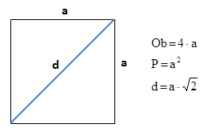

Zadanie 2
Zdefiniuj zmienną przechowującą długość boku kwadratu. Oblicz obwód, pole i przekątną figury, a następnie wyprowadź wyniki na ekran.
Do wyznaczenia wartości pierwiastka kwadratowego użyj funkcji Math.sqrt (np. Math.sqrt(x) zwraca wartość pierwiastka kwadratowego z x).
Więcej o funkcji Math.sqrt 